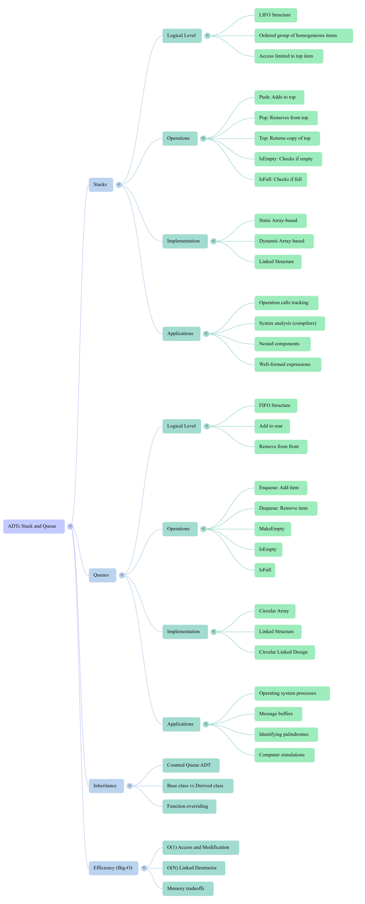

Xinxing Wu
<p class='titlep'> </p> # Stacks & Queues <hr> <br> Xinxing Wu
# Outline [<p class="hover-underline-animation">Review</p>](#/ch0) [<p class="hover-underline-animation">Stacks</p>](#/ch1) [<p class="hover-underline-animation">Queues</p>](#/ch2)
# Outline (cont.) [<p class="hover-underline-animation">Summary</p>](#/ch3) [<p class="hover-underline-animation">Application</p>](#/ch4)
## Goal <div id="shadebox-neon" class="shadebox neon"> - Today we learn two classic ADTs: Stack and Queue. <hr style="border: none; border-top: 1.5px solid cyan;"> - We’ll always separate: - 1)Logical view (<spanGREEN>what it DOES</spanGREEN>) - 2)Application view (<spanGREEN>where it’s used</spanGREEN>) - 3)Implementation view (<spanGREEN>how we build it in C++</spanGREEN>) </div>
## Goal (cont.) <div id="shadebox-neon" class="shadebox neon"> - By the end, you can: <hr style="border: none; border-top: 1.5px solid cyan;"> - Explain and use **Stack (<spanGREEN>LIFO</spanGREEN>)** and **Queue (<spanGREEN>FIFO</spanGREEN>)** - Write simple C++ **Stack** and **Queue** classes - Handle **<spanBYMix>overflow</spanBYMix>/<spanBYMix>underflow</spanBYMix>** safely - Use Stack to check **balanced parentheses** - Use Queue for **waiting-line** style problems </div>
<p class="definition-rainbow-title">Review</p>
<div class="definition-pro-Y-container"> <div class="definition-pro-Y-title">Example</div> <div class="definition-pro-Y-shadebox"> <div style="width: 800px;"></div> Washing and Stacking Dishes at Home <hr style="border:0;height:6px;border-radius:999px;background:linear-gradient(90deg,#ff3b3b,#ffb13b,#fff23b,#3bff8f,#3bc8ff,#8a3bff,#ff3b3b);background-size:300% 100%;animation:rainbowLine 4s linear infinite;"><style>@keyframes rainbowLine{0%{background-position:0% 50%}100%{background-position:300% 50%}}</style> Imagine you’re washing dishes after dinner. You wash: - A <spanGREEN>large</spanGREEN> dinner plate - Then a salad plate - Then a <spanGREEN>small</spanGREEN> dessert plate You stack them neatly on the counter, one on top of another. Later, someone needs a plate. <spanBYMix>Which one do they take?</spanBYMix> </div> </div> <div class="definition-pro-Y-container"> <div class="definition-pro-Y-title">Example</div> <div class="definition-pro-Y-shadebox"> <div style="width: 800px;"></div> - That’s a stack. > <spanRED>The last plate placed on top is the first one removed.</spanRED> - You can only access the top. Similation https://yongdanielliang.github.io/animation/web/Stack.html </div> </div> <div class="definition-pro-Y-container"> <div class="definition-pro-Y-title">Example</div> <div class="definition-pro-Y-shadebox"> <div style="width: 800px;"></div> Boarding a Bus <hr style="border:0;height:6px;border-radius:999px;background:linear-gradient(90deg,#ff3b3b,#ffb13b,#fff23b,#3bff8f,#3bc8ff,#8a3bff,#ff3b3b);background-size:300% 100%;animation:rainbowLine 4s linear infinite;"><style>@keyframes rainbowLine{0%{background-position:0% 50%}100%{background-position:300% 50%}}</style> You arrive at a bus stop. People arrive in this order: - Person A - Person B - Person C The bus arrives. <spanGREEN>Who boards first?</spanGREEN> </div> </div> <div class="definition-pro-Y-container"> <div class="definition-pro-Y-title">Example</div> <div class="definition-pro-Y-shadebox"> <div style="width: 800px;"></div> That’s a queue. > First In, First Out Similation https://yongdanielliang.github.io/animation/web/Queue.html </div> </div> <div class="definition-pro-Y-container"> <div class="definition-pro-Y-title">What is an ADT?</div> <div class="definition-pro-Y-shadebox"> - **ADT (Abstract Data Type)** = a “thing” defined by: - **data it holds** - **operations you can do** <br> <br> <hr style="border:0;height:6px;border-radius:999px;background:linear-gradient(90deg,#ff3b3b,#ffb13b,#fff23b,#3bff8f,#3bc8ff,#8a3bff,#ff3b3b);background-size:300% 100%;animation:rainbowLine 4s linear infinite;"><style>@keyframes rainbowLine{0%{background-position:0% 50%}100%{background-position:300% 50%}}</style> <br> <br> <div id="shadebox-glass" class="shadebox glass"> - ADT hides “how it’s stored” - We can implement the same ADT in different ways (array, linked list, etc.) </div> </div> </div> <div class="definition-pro-Y-container"> <div class="definition-pro-Y-title">Why ADTs</div> <div class="definition-pro-Y-shadebox"> <div style="width: 800px;"></div> - You learn one clean interface - You can swap implementations later - Your main program becomes simpler </div> </div>
<p class="definition-rainbow-title">Stacks</p>
<div class="definition-pro-Y-container"> <div class="definition-pro-Y-title">Example of stacks</div> <div class="definition-pro-Y-shadebox"> <div style="width: 800px;"></div> Think of: - stack of plates - stack of books - undo history in apps <br> <hr style="border:0;height:6px;border-radius:999px;background:linear-gradient(90deg,#ff3b3b,#ffb13b,#fff23b,#3bff8f,#3bc8ff,#8a3bff,#ff3b3b);background-size:300% 100%;animation:rainbowLine 4s linear infinite;"><style>@keyframes rainbowLine{0%{background-position:0% 50%}100%{background-position:300% 50%}}</style> <br> <div id="shadebox-glass" class="shadebox glass"> **You can only remove the <spanRED>top</spanRED> item.** </div> </div> </div> <div class="definition-pro-Y-container"> <div class="definition-pro-Y-title">Stack (logical definition)</div> <div class="definition-pro-Y-shadebox"> <div style="width: 800px;"></div> A **Stack** is an ordered collection where: - <spanGREEN>insert</spanGREEN> happens at the **top** - <spanGREEN>remove</spanGREEN> happens at the **top** <br> <hr style="border:0;height:6px;border-radius:999px;background:linear-gradient(90deg,#ff3b3b,#ffb13b,#fff23b,#3bff8f,#3bc8ff,#8a3bff,#ff3b3b);background-size:300% 100%;animation:rainbowLine 4s linear infinite;"><style>@keyframes rainbowLine{0%{background-position:0% 50%}100%{background-position:300% 50%}}</style> <br> - rule: **Last In, First Out (LIFO)** </div> </div> <div class="definition-pro-Y-container"> <div class="definition-pro-Y-title">LIFO example</div> <div class="definition-pro-Y-shadebox"> <div style="width: 800px;"></div> - Push: 2, then 3, then 5 - Top is 5 - Pop removes 5 first (the last pushed) </div> </div> <div class="definition-pro-Y-container"> <div class="definition-pro-Y-title">Vocabulary</div> <div class="definition-pro-Y-shadebox"> <div style="width: 800px;"></div> - **Push(x)**: put x on top - **Pop()**: remove top - **Top()** (or Peek): look at top without removing - **IsEmpty()**: any items? - **IsFull()**: only for fixed-size implementations </div> </div> <div class="definition-pro-Y-container"> <div class="definition-pro-Y-title">Stack operations</div> <div class="definition-pro-Y-shadebox"> <div style="width: 800px;"></div> Minimum common set: <div style="font-size: 1.6em; line-height: 1.5;"> - `Push(item)` - `Pop()` - `Top()` - `IsEmpty()` - `IsFull` (only if capacity is limited) </div> </div> </div> <div class="definition-pro-Y-container"> <div class="definition-pro-Y-title">Underflow vs Overflow</div> <div class="definition-pro-Y-shadebox"> <div style="width: 800px;"></div> - **Underflow**: Pop/Top when empty - **Overflow**: Push when full (fixed-size stack) </div> </div> <div class="definition-pro-Y-container"> <div class="definition-pro-Y-title">“Logical garbage” idea</div> <div class="definition-pro-Y-shadebox"> <div style="width: 800px;"></div> If we store stack in an <spanGREEN>array</spanGREEN>: - Pop usually just moves the `top` index down - Old values still exist in memory (garbage), but we treat them as “not in stack” - The stack’s “real content” is only up to `top` </div> </div> <div class="definition-pro-Y-container"> <div class="definition-pro-Y-title">The key variable: `top`</div> <div class="definition-pro-Y-shadebox"> <div style="width: 800px;"></div> A classic design: - `top` stores the index of the last valid element - when empty: `top = -1` - after pushing first item: `top = 0` </div> </div> <div class="definition-pro-Y-container"> <div class="definition-pro-Y-title">Visual trace</div> <div class="definition-pro-Y-shadebox"> <div style="width: 800px;"></div> Start (empty): - `top = -1` Push 10: - `top = 0` - items[0] = 10 Push 20: - `top = 1` - items[1] = 20 </div> </div> <div class="definition-pro-Y-container"> <div class="definition-pro-Y-title">Visual trace (cont.)</div> <div class="definition-pro-Y-shadebox"> <div style="width: 800px;"></div> Top(): - returns items[1] = 20 Pop(): - `top = 0` </div> </div> <div class="definition-pro-Y-container"> <div class="definition-pro-Y-title">Quick check</div> <div class="definition-pro-Y-shadebox"> <div style="width: 800px;"></div> If `top == -1`, then: - IsEmpty() returns true - Top() should <spanBYMix>NOT</spanBYMix> be allowed (underflow) If `top == MAX-1`, then: - IsFull() returns true (overflow risk) </div> </div> <div class="definition-pro-Y-container"> <div class="definition-pro-Y-title">Complexity</div> <div class="definition-pro-Y-shadebox"> <div style="width: 800px;"></div> In a good stack: - Push: **O(1)** - Pop: **O(1)** - Top: **O(1)** </div> </div> <div class="definition-pro-Y-container"> <div class="definition-pro-Y-title">Stack ADT</div> <div class="definition-pro-Y-shadebox"> <div style="width: 800px;"></div> When we use ADT, we describe: - what each function does - what must be true before calling it - what happens after calling it - what errors it can throw </div> </div> <div class="definition-pro-Y-container"> <div class="definition-pro-Y-title">Precondition / Postcondition example</div> <div class="definition-pro-Y-shadebox"> <div style="width: 800px;"></div> `Pop()`: - Precondition: stack is initialized AND <spanRED>not</spanRED> empty - Postcondition: one item removed (top <spanGREEN>moves down</spanGREEN>) - If empty: throws an “EmptyStack” error </div> </div> <div class="definition-pro-Y-container"> <div class="definition-pro-Y-title">We will implement with</div> <div class="definition-pro-Y-shadebox"> <div style="width: 800px;"></div> **<spanGREEN>Option A</spanGREEN> (easiest): Fixed array** - simple - good for learning <br> <hr style="border:0;height:6px;border-radius:999px;background:linear-gradient(90deg,#ff3b3b,#ffb13b,#fff23b,#3bff8f,#3bc8ff,#8a3bff,#ff3b3b);background-size:300% 100%;animation:rainbowLine 4s linear infinite;"><style>@keyframes rainbowLine{0%{background-position:0% 50%}100%{background-position:300% 50%}}</style> <br> <div id="shadebox-glass" class="shadebox glass"> Later: - **Option B: Dynamic array** - **Option C: Linked list** </div> </div> </div> <div class="definition-pro-Y-container"> <div class="definition-pro-Y-title">Stack Implementation (Array-Based)</div> <div class="definition-pro-Y-shadebox"> <div style="width: 800px;"></div> We store: - `items[MAX]` - `top` index <br> <hr style="border:0;height:6px;border-radius:999px;background:linear-gradient(90deg,#ff3b3b,#ffb13b,#fff23b,#3bff8f,#3bc8ff,#8a3bff,#ff3b3b);background-size:300% 100%;animation:rainbowLine 4s linear infinite;"><style>@keyframes rainbowLine{0%{background-position:0% 50%}100%{background-position:300% 50%}}</style> <br> <div id="shadebox-glass" class="shadebox glass"> Rules: - Push: `top++`, store at `items[top]` - Pop: `top--` - Top: return `items[top]` </div> </div> </div> <div class="definition-pro-Y-container"> <div class="definition-pro-Y-title">Minimal C++ Stack</div> <div class="definition-pro-Y-shadebox"> <div style="width: 800px;"></div> <div id="shadebox-glass" class="shadebox glass"> We start with `int` only. Later we can switch to `ItemType`, templates, or `char`. </div> See exmaples of Try Catch in Canvas https://kysu.instructure.com/courses/7061/pages/example-and-comparison-for-try-catch?module_item_id=416949 </div> </div> <div class="definition-pro-Y-container"> <div class="definition-pro-Y-title">Stack class (fixed-size)</div> <div class="definition-pro-Y-shadebox"> <div style="width: 800px;"></div> <div style="font-size: 1.5em; line-height: 1.5;"> ``` #include <iostream> #include <stdexcept> using namespace std; class StackFull : public runtime_error { public: StackFull() : runtime_error("Stack overflow: stack is full") {} }; class StackEmpty : public runtime_error { public: StackEmpty() : runtime_error("Stack underflow: stack is empty") {} }; class IntStack { private: static const int MAX = 100; int items[MAX]; int top; // index of top item, -1 means empty public: IntStack() { top = -1; } bool IsEmpty() const { return top == -1; } bool IsFull() const { return top == MAX - 1; } void Push(int x) { if (IsFull()) throw StackFull(); top++; items[top] = x; } void Pop() { if (IsEmpty()) throw StackEmpty(); top--; } int Top() const { if (IsEmpty()) throw StackEmpty(); return items[top]; } }; ``` </div> </div> </div> <div class="definition-pro-Y-container"> <div class="definition-pro-Y-title">Note</div> <div class="definition-pro-Y-shadebox"> <div style="width: 800px;"></div> - This matches the classic textbook logic: - <spanGREEN>top starts -1</spanGREEN>, <spanRED>IsFull checks MAX-1</spanRED>, <spanBYMix>Pop/Top throw when empty</spanBYMix>. </div> </div> <div id="shadebox"> ### Example code <hr style="border: none; border-top: 1.5px solid cyan;"> ``` int main() { IntStack s; s.Push(10); s.Push(20); cout << "Top is: " << s.Top() << "\n"; // 20 s.Pop(); cout << "Top is now: " << s.Top() << "\n"; // 10 return 0; } ``` </div> <div id="shadebox"> ### Example code - Add safe error handling (try/catch) <hr style="border: none; border-top: 1.5px solid cyan;"> ``` int main() { IntStack s; try { s.Pop(); // error: empty } catch (const exception& e) { cerr << "Error: " << e.what() << "\n"; } return 0; } ``` </div> <div class="question-container"> <div class="question-title">Why cerr is used for errors</div> <div class="question-shadebox"> <div style="width: 800px;"></div> - cout is normal output - cerr is for errors (so you can separate errors from normal text) - simple rule for beginners: - use cout for results - use cerr for warnings/errors </div> </div> <div class="question-container"> <div class="question-title">Common mistakes of Stack</div> <div class="question-shadebox"> <div style="width: 800px;"></div> - Forget top = -1 in constructor - Use top == 0 as empty (wrong!) - Pop without checking empty - Push without checking full - Confuse Top() with Pop() </div> </div> <div class="definition-container"> <div class="definition-title">Practice</div> <div class="definition-shadebox"> <div style="width: 800px;"></div> - Start empty (top=-1) - Operations: - Push(7) - Push(9) - Pop() - Push(3) </div> </div> <div class="definition-container"> <div class="definition-title">Practice (cont.) </div> <div class="definition-shadebox"> <div style="width: 800px;"></div> Question: - What is Top() now? - What is top now? </div> </div> <div class="definition-container"> <div class="definition-title">Practice - Answer </div> <div class="definition-shadebox"> <div style="width: 800px;"></div> Push(7) → top=0, items[0]=7 Push(9) → top=1, items[1]=9 Pop() → top=0 Push(3) → top=1, items[1]=3 <hr style="border: none; border-top: 2px dashed green;"> So: Top() = 3 top = 1 </div> </div> <div class="question-container"> <div class="question-title">Application View of Stacks</div> <div class="question-shadebox"> <div style="width: 800px;"></div> Why stacks are useful <hr style="border: none; border-top: 2px dashed green;"> Stacks appear when: - you must “go back” to the <spanRED>most recent</spanRED> thing - you must match <spanGREEN>open/close</spanGREEN> symbols - function calls return in <spanRED>reverse</spanRED> order </div> </div> <div class="question-container"> <div class="question-title">Example - “Undo”</div> <div class="question-shadebox"> <div style="width: 800px;"></div> - type A - type B - type C - Undo removes C first (LIFO) </div> </div> <div id="shadebox"> ### Example code <hr style="border: none; border-top: 1.5px solid cyan;"> ``` #include <iostream> #include <stack> #include <string> using namespace std; void typeAction(stack<string>& undoStack, const string& action) { cout << "Type " << action << "\n"; undoStack.push(action); } void undo(stack<string>& undoStack) { if (undoStack.empty()) { cout << "Undo: nothing to undo\n"; return; } cout << "Undo removes " << undoStack.top() << "\n"; undoStack.pop(); } int main() { stack<string> undoStack; typeAction(undoStack, "A"); typeAction(undoStack, "B"); typeAction(undoStack, "C"); cout << "\nNow undo:\n"; undo(undoStack); // removes C first undo(undoStack); // then removes B undo(undoStack); // then removes A return 0; } ``` </div> <div class="question-container"> <div class="question-title">Example - Function calls (concept only)</div> <div class="question-shadebox"> <div style="width: 800px;"></div> When a function calls another function: - system “remembers” where to return - last function called returns first This behavior is stack-like. </div> </div> <div id="shadebox"> ### Example code - Try and explain the results <hr style="border: none; border-top: 1.5px solid cyan;"> ``` #include <iostream> using namespace std; void C() { cout << "Inside C\n"; cout << "C returns to B\n"; } void B() { cout << "Inside B (B calls C)\n"; C(); cout << "Back in B (after C)\n"; cout << "B returns to A\n"; } void A() { cout << "Inside A (A calls B)\n"; B(); cout << "Back in A (after B)\n"; cout << "A returns to main\n"; } int main() { cout << "main calls A\n"; A(); cout << "Back in main (after A)\n"; return 0; } ``` </div> <div class="question-container"> <div class="question-title">Example - Well-formed parentheses</div> <div class="question-shadebox"> <div style="width: 800px;"></div> We want to check: - (), {}, [] match correctly <hr style="border: none; border-top: 1.5px solid cyan;"> Examples: - ( [ ] ) is OK - ( [ ) ] is <spanRED>NOT</spanRED> OK </div> </div> <div class="definition-container"> <div class="definition-title">Key idea</div> <div class="definition-shadebox"> <div style="width: 800px;"></div> Read the expression left to right: - when you see an opening symbol → push it - when you see a closing symbol → top must match → pop it At the end: - stack must be empty </div> </div> <div class="definition-container"> <div class="definition-title">Example: {[()]}</div> <div class="definition-shadebox"> <div style="width: 800px;"></div> Expression: { [ ( ) ] } - { push - [ push - ( push - ) matches ( → pop - ] matches [ → pop - } matches { → pop End: stack empty → well-formed </div> </div> <div class="definition-container"> <div class="definition-title">Example: {[(])}</div> <div class="definition-shadebox"> <div style="width: 800px;"></div> - { push - [ push - ( push - ] closes, but top is ( → mismatch ❌ </div> </div> <div class="definition-container"> <div class="definition-title">What if closing appears too early?</div> <div class="definition-shadebox"> <div style="width: 800px;"></div> Expression: )() First char ): - stack empty → underflow → not well-formed ❌ </div> </div> <div class="definition-container"> <div class="definition-title">What if openings remain?</div> <div class="definition-shadebox"> <div style="width: 800px;"></div> Expression: (() End: - stack not empty → extra opening → not well-formed ❌ </div> </div> <div class="definition-container"> <div class="definition-title">Functions</div> <div class="definition-shadebox"> <div style="width: 800px;"></div> We often write: - IsOpen(c) → true if c is one of (, [, { - IsClose(c) → true if c is one of ), ], } - Matches(open, close) → true if they pair correctly </div> </div> <div id="shadebox"> ### Example - use STL stack <hr style="border: none; border-top: 1.5px solid cyan;"> ``` #include <iostream> #include <stack> #include <string> using namespace std; bool IsOpen(char c) { return c == '(' || c == '[' || c == '{'; } bool IsClose(char c) { return c == ')' || c == ']' || c == '}'; } bool Matches(char open, char close) { return (open == '(' && close == ')') || (open == '[' && close == ']') || (open == '{' && close == '}'); } bool IsWellFormed(const string& s) { stack<char> st; for (char c : s) { if (IsOpen(c)) { st.push(c); } else if (IsClose(c)) { if (st.empty()) return false; // underflow char top = st.top(); st.pop(); if (!Matches(top, c)) return false; // mismatch } } return st.empty(); // must be empty at end } int main() { cout << IsWellFormed("{[()]}") << "\n"; // 1 cout << IsWellFormed("{[(])}") << "\n"; // 0 } ``` </div> <div class="definition-container"> <div class="definition-title">Note</div> <div class="definition-shadebox"> <div style="width: 800px;"></div> We used C++ Standard Template Library (STL) stack to keep the focus on stack behavior, not our class code. </div> </div> <div class="definition-container"> <div class="definition-title">Algorithms using Stacks</div> <div class="definition-shadebox"> <div style="width: 800px;"></div> If we have our own stack: - replace st.push with Push - replace st.pop with Pop - replace st.top with Top The logic stays the same. </div> </div> <div class="definition-container"> <div class="definition-title">Pitfalls (parentheses checker)</div> <div class="definition-shadebox"> <div style="width: 800px;"></div> - Forget to check empty before Top/Pop - Forget final st.empty() check - Treat letters/numbers as errors (we usually ignore them) </div> </div> <div class="definition-container"> <div class="definition-title">Exercise</div> <div class="definition-shadebox"> <div style="width: 800px;"></div> Write expressions and decide: - Which are well-formed? - (a+b)*(c-d) - ([)] - ((x+y) - {[2*(3+4)]} </div> </div> <div class="definition-container"> <div class="definition-title">Implementation View</div> <div class="definition-shadebox"> <div style="width: 800px;"></div> Why multiple implementations? Because constraints change: - fixed size stack is simple but limited - dynamic size stack grows - linked stack grows until memory runs out </div> </div> <div class="definition-container"> <div class="definition-title">Dynamic array stack</div> <div class="definition-shadebox"> <div style="width: 800px;"></div> Instead of: ``` int items[MAX]; ``` we do: ``` int* items = new int[maxSize]; ``` </div> </div> <div class="definition-container"> <div class="definition-title">Dynamic array stack (cont.)</div> <div class="definition-shadebox"> <div style="width: 800px;"></div> And we must: - delete[] in destructor - store maxSize in a variable </div> </div> <div id="shadebox"> ### Example code - Dynamic array stack <hr style="border: none; border-top: 1.5px solid cyan;"> ``` class DynIntStack { private: int* items; int top; int maxSize; public: DynIntStack(int size = 100) { maxSize = size; items = new int[maxSize]; top = -1; } ~DynIntStack() { delete[] items; } bool IsEmpty() const { return top == -1; } bool IsFull() const { return top == maxSize - 1; } void Push(int x) { if (IsFull()) throw StackFull(); items[++top] = x; } void Pop() { if (IsEmpty()) throw StackEmpty(); top--; } int Top() const { if (IsEmpty()) throw StackEmpty(); return items[top]; } }; ``` </div> <div class="definition-container"> <div class="definition-title">Copying objects</div> <div class="definition-shadebox"> <div style="width: 800px;"></div> If you copy a class with new[], you must be careful. - avoid copying these objects - or use STL vector / stack later We keep this as “concept awareness”. </div> </div> <div class="definition-container"> <div class="definition-title">Linked stack (idea)</div> <div class="definition-shadebox"> <div style="width: 800px;"></div> We store nodes: - each node holds (data, next) - top points to the first node </div> </div> <div class="definition-container"> <div class="definition-title">Linked stack (cont.)</div> <div class="definition-shadebox"> <div style="width: 800px;"></div> Push: - create new node - new->next = top - top = new Pop: - remove top node </div> </div> <div id="shadebox"> ### Example code - Linked stack <hr style="border: none; border-top: 1.5px solid cyan;"> ``` class LinkedIntStack { private: struct Node { int data; Node* next; }; Node* topPtr; public: LinkedIntStack() { topPtr = nullptr; } ~LinkedIntStack() { while (!IsEmpty()) Pop(); } bool IsEmpty() const { return topPtr == nullptr; } void Push(int x) { Node* n = new Node; n->data = x; n->next = topPtr; topPtr = n; } void Pop() { if (IsEmpty()) throw StackEmpty(); Node* old = topPtr; topPtr = topPtr->next; delete old; } int Top() const { if (IsEmpty()) throw StackEmpty(); return topPtr->data; } }; ``` </div> <div class="definition-container"> <div class="definition-title">Compare implementations</div> <div class="definition-shadebox"> <div style="width: 800px;"></div> Array stack: - ✅ simplest - ✅ fast - ❌ fixed size (unless dynamic) </div> </div> <div class="definition-container"> <div class="definition-title">Compare implementations (cont.)</div> <div class="definition-shadebox"> <div style="width: 800px;"></div> Linked stack: - ✅ grows easily - ❌ more pointer code (harder for beginners) - ❌ extra memory per node </div> </div> <div class="definition-container"> <div class="definition-title">Testing</div> <div class="definition-shadebox"> Test cases you MUST do: - constructor → empty - push a few → top correct - pop → removes last pushed - underflow → pop/top on empty throws - overflow → push when full throws (fixed-size) </div> </div> <div class="definition-com-container"> <div class="definition-com-title">Exercise</div> <div class="definition-com-shadebox"> Stack is LIFO or FIFO? <button type="button" class="reveal-btn" data-answer="answer-q1">Show Answer</button> <div id="answer-q1" class="answer-box"> <b>Answer:</b>LIFO (Last In, First Out) </div> <hr style="border: none; border-top: 2px dashed orange;"> Which operation removes an item? <button type="button" class="reveal-btn" data-answer="answer-q2">Show Answer</button> <div id="answer-q2" class="answer-box"> <b>Answer:</b>Pop() </div> <hr style="border: none; border-top: 2px dashed orange;"> What value of top means empty in our implementation? <button type="button" class="reveal-btn" data-answer="answer-q3">Show Answer</button> <div id="answer-q3" class="answer-box"> <b>Answer:</b>top = -1 </div> <hr style="border: none; border-top: 2px dashed orange;"> What does “underflow” mean? <button type="button" class="reveal-btn" data-answer="answer-q4">Show Answer</button> <div id="answer-q4" class="answer-box"> <b>Answer:</b>Trying to pop (or access top) when the stack is empty. </div> </div> </div> <div class="definition-com-container"> <div class="definition-com-title">Exercise (cont.)</div> <div class="definition-com-shadebox"> What is a stack? <button type="button" class="reveal-btn" data-answer="answer-q5">Show Answer</button> <div id="answer-q5" class="answer-box"> <b>Answer:</b>A LIFO data structure (most recent item comes out first). </div> <hr style="border: none; border-top: 2px dashed orange;"> What are the 3 core stack operations? <button type="button" class="reveal-btn" data-answer="answer-q6">Show Answer</button> <div id="answer-q6" class="answer-box"> <b>Answer:</b>Push (add), Pop (remove), Top/Peek (look at top without removing). </div> <hr style="border: none; border-top: 2px dashed orange;"> Why is top = -1 a “clean trick” for arrays? <button type="button" class="reveal-btn" data-answer="answer-q7">Show Answer</button> <div id="answer-q7" class="answer-box"> <b>Answer:</b>It makes the empty case simple: empty when top == -1; first push goes to index 0 after ++top </div> </div> </div> <div class="definition-com-container"> <div class="definition-com-title">Exercise (cont.)</div> <div class="definition-com-shadebox"> What kinds of problems are stacks perfect for? <button type="button" class="reveal-btn" data-answer="answer-q8">Show Answer</button> <div id="answer-q8" class="answer-box"> <b>Answer:</b>“Most recent first” tasks (undo, backtracking, expression evaluation, parentheses matching, call stack). </div> <hr style="border: none; border-top: 2px dashed orange;"> What stack implementations did we build? <button type="button" class="reveal-btn" data-answer="answer-q9">Show Answer</button> <div id="answer-q9" class="answer-box"> <b>Answer:</b>Fixed array stack (capacity is constant); Dynamic array stack (resizes when full); Linked list stack (no fixed capacity; grows by nodes) </div> </div> </div>
<p class="definition-rainbow-title">Queues</p>
<div class="definition-pro-Y-container"> <div class="definition-pro-Y-title">Examples of Queues</div> <div class="definition-pro-Y-shadebox"> <div style="width: 800px;"></div> Think of: - a line at a store - print jobs waiting - customer service tickets <br> <hr style="border:0;height:6px;border-radius:999px;background:linear-gradient(90deg,#ff3b3b,#ffb13b,#fff23b,#3bff8f,#3bc8ff,#8a3bff,#ff3b3b);background-size:300% 100%;animation:rainbowLine 4s linear infinite;"><style>@keyframes rainbowLine{0%{background-position:0% 50%}100%{background-position:300% 50%}}</style> <br> Rule: - first person in line is served first </div> </div> <div class="definition-pro-Y-container"> <div class="definition-pro-Y-title">Queue (logical definition)</div> <div class="definition-pro-Y-shadebox"> <div style="width: 800px;"></div> A Queue is an ordered collection where: - <spanGREEN>insert</spanGREEN> happens at the <spanRED>rear</spanRED> (back) - <spanGREEN>remove</spanGREEN> happens at the <spanRED>front</spanRED> - Rule: First In, First Out (FIFO) </div> </div> <div class="definition-pro-Y-container"> <div class="definition-pro-Y-title">FIFO example</div> <div class="definition-pro-Y-shadebox"> <div style="width: 800px;"></div> - Enqueue: 2, then 3, then 5 - Front is 2 - Dequeue removes 2 first </div> </div> <div class="definition-pro-Y-container"> <div class="definition-pro-Y-title">Queue vocabulary</div> <div class="definition-pro-Y-shadebox"> <div style="width: 800px;"></div> - Enqueue(x): add x to rear - Dequeue(): remove front - Front(): look at front without removing - IsEmpty() - IsFull() (fixed-size) </div> </div> <div class="definition-pro-Y-container"> <div class="definition-pro-Y-title">Stack vs Queue</div> <div class="definition-pro-Y-shadebox"> <div style="width: 800px;"></div> Stack: - push/pop at same end (top) - LIFO <hr style="border: none; border-top: 2px dashed orange;"> Queue: - enqueue at rear, dequeue at front - FIFO </div> </div> <div class="definition-pro-Y-container"> <div class="definition-pro-Y-title">Queue operations</div> <div class="definition-pro-Y-shadebox"> <div style="width: 800px;"></div> Typical ADT says: - Enqueue(item) adds one item - Dequeue() removes one item - Front() returns front item (no remove) - IsEmpty() - IsFull() (if bounded) </div> </div> <div class="definition-pro-Y-container"> <div class="definition-pro-Y-title">Underflow vs Overflow (queue)</div> <div class="definition-pro-Y-shadebox"> <div style="width: 800px;"></div> - underflow: dequeue/front when empty - overflow: enqueue when full (bounded) </div> </div> <div class="definition-pro-Y-container"> <div class="definition-pro-Y-title">Complexity expectation</div> <div class="definition-pro-Y-shadebox"> <div style="width: 800px;"></div> Good queue: - Enqueue: $\mathcal{O}(1)$ - Dequeue: $\mathcal{O}(1)$ - Front: $\mathcal{O}(1)$ </div> </div> <div class="definition-pro-Y-container"> <div class="definition-pro-Y-title">Queue Implementation (Array-Based, Circular)</div> <div class="definition-pro-Y-shadebox"> <div style="width: 800px;"></div> Why circular array? - If we use a plain array and always remove from index 0: every Dequeue would need shifting (slow) <hr style="border: none; border-top: 1.5px solid cyan;"> Better: - use front index and rear index - wrap around at the end of array This is called a <spanGREEN>circular</spanGREEN> queue. </div> </div> <div class="definition-pro-Y-container"> <div class="definition-pro-Y-title">Circular queue (indices)</div> <div class="definition-pro-Y-shadebox"> <div style="width: 800px;"></div> Array size = 5 Indices: 0 1 2 3 4 If rear hits 4, next rear becomes 0. We do: - (index + 1) % MAX </div> </div> <div id="shadebox"> ### Example code - next=(index+1)`%` MAX <hr style="border: none; border-top: 1.5px solid cyan;"> ``` #include <iostream> using namespace std; int main() { const int MAX = 5; int rear = 3; cout << "Start rear = " << rear << "\n"; // simulate 4 "enqueue" moves of rear for (int i = 0; i < 4; i++) { rear = (rear + 1) % MAX; cout << "After move " << (i + 1) << ", rear = " << rear << "\n"; } return 0; } ``` </div> <div class="definition-pro-Y-container"> <div class="definition-pro-Y-title">What variables stored</div> <div class="definition-pro-Y-shadebox"> <div style="width: 800px;"></div> A simple, beginner-friendly design: - items[MAX] - front = index of front element - rear = index of last element - count = number of elements currently stored </div> </div> <div class="definition-pro-Y-container"> <div class="definition-pro-Y-title">What variables stored (cont.)</div> <div class="definition-pro-Y-shadebox"> <div style="width: 800px;"></div> Start: - front = 0 - rear = -1 - count = 0 </div> </div> <div class="definition-pro-Y-container"> <div class="definition-pro-Y-title">Conditions</div> <div class="definition-pro-Y-shadebox"> <div style="width: 800px;"></div> - IsEmpty: count == 0 - IsFull: count == MAX Enqueue: - rear = (rear + 1) % MAX - items[rear] = x - count++ </div> </div> <div class="definition-pro-Y-container"> <div class="definition-pro-Y-title">Conditions (cont.)</div> <div class="definition-pro-Y-shadebox"> <div style="width: 800px;"></div> Dequeue: - front = (front + 1) % MAX - count-- Front(): - return items[front] </div> </div> <div id="shadebox"> ### Example code - Queue exceptions (like stack) <hr style="border: none; border-top: 1.5px solid cyan;"> ``` #include <stdexcept> using namespace std; class QueueFull : public runtime_error { public: QueueFull() : runtime_error("Queue overflow: queue is full") {} }; class QueueEmpty : public runtime_error { public: QueueEmpty() : runtime_error("Queue underflow: queue is empty") {} }; ``` </div> <div id="shadebox"> ### Example code - Circular Queue (int) <hr style="border: none; border-top: 1.5px solid cyan;"> ``` #include <iostream> #include <stdexcept> using namespace std; class QueueFull : public runtime_error { public: QueueFull() : runtime_error("Queue overflow: queue is full") {} }; class QueueEmpty : public runtime_error { public: QueueEmpty() : runtime_error("Queue underflow: queue is empty") {} }; class IntQueue { private: static const int MAX = 5; // small for easy testing int items[MAX]; int front; int rear; int count; public: IntQueue() { front = 0; rear = -1; count = 0; } bool IsEmpty() const { return count == 0; } bool IsFull() const { return count == MAX; } void Enqueue(int x) { if (IsFull()) throw QueueFull(); rear = (rear + 1) % MAX; items[rear] = x; count++; } void Dequeue() { if (IsEmpty()) throw QueueEmpty(); front = (front + 1) % MAX; count--; } int Front() const { if (IsEmpty()) throw QueueEmpty(); return items[front]; } }; ``` </div> <div class="definition-pro-Y-container"> <div class="definition-pro-Y-title">Testing (watch indices)</div> <div class="definition-pro-Y-shadebox"> <div style="width: 800px;"></div> ``` int main() { IntQueue q; q.Enqueue(10); q.Enqueue(20); q.Enqueue(30); cout << q.Front() << "\n"; // 10 q.Dequeue(); // removes 10 cout << q.Front() << "\n"; // 20 q.Enqueue(40); q.Enqueue(50); // now full if MAX=5 return 0; } ``` </div> </div> <div class="definition-pro-Y-container"> <div class="definition-pro-Y-title">Try/catch demo (queue)</div> <div class="definition-pro-Y-shadebox"> <div style="width: 800px;"></div> ``` int main() { IntQueue q; try { q.Dequeue(); } catch (const exception& e) { cerr << "Error: " << e.what() << "\n"; } return 0; } ``` </div> </div> <div class="definition-pro-Y-container"> <div class="definition-pro-Y-title">Exercise</div> <div class="definition-pro-Y-shadebox"> <div style="width: 800px;"></div> Practice 2 — Trace Circular Queue Behavior Assume: - Maximum size (MAX) = 5 - Queue starts empty </div> </div> <div class="definition-pro-Y-container"> <div class="definition-pro-Y-title">Exercise (cont.)</div> <div class="definition-pro-Y-shadebox"> <div style="width: 800px;"></div> Operations (in order): - Enqueue(1) - Enqueue(2) - Enqueue(3) - Dequeue() - Enqueue(4) - Enqueue(5) - Enqueue(6) </div> </div> <div class="definition-com-container"> <div class="definition-com-title">Exercise (cont.)</div> <div class="definition-com-shadebox"> <div style="width: 800px;"></div> What is the value returned by Front() at the end? <button type="button" class="reveal-btn" data-answer="answer-q10">Show Answer</button> <div id="answer-q10" class="answer-box"> <b>Answer:</b>Front() = 2 </div> <hr style="border: none; border-top: 2px dashed orange;"> What values are stored in the queue at the end (in order)? <button type="button" class="reveal-btn" data-answer="answer-q11">Show Answer</button> <div id="answer-q11" class="answer-box"> <b>Answer:</b>Queue contents (in order): [2, 3, 4, 5, 6] </div> </div> <div class="definition-pro-Y-container"> <div class="definition-pro-Y-title">Step-by-step queue state</div> <div class="definition-pro-Y-shadebox"> <div style="width: 800px;"></div> - Start: [] - Enqueue(1) → [1] - Enqueue(2) → [1, 2] - Enqueue(3) → [1, 2, 3] - Dequeue() removes 1 → [2, 3] - Enqueue(4) → [2, 3, 4] - Enqueue(5) → [2, 3, 4, 5] - Enqueue(6) → [2, 3, 4, 5, 6] </div> </div> <div class="definition-pro-Y-container"> <div class="definition-pro-Y-title">Application View (Queues)</div> <div class="definition-pro-Y-shadebox"> <div style="width: 800px;"></div> Where queues show up - “waiting line” systems - printing jobs - customer service - networking packets - Breadth-First Search (BFS) concept </div> </div> <div class="definition-pro-Y-container"> <div class="definition-pro-Y-title">Simple application 1</div> <div class="definition-pro-Y-shadebox"> <div style="width: 800px;"></div> Simple application 1: store line simulation <div id="shadebox-glass" class="shadebox glass"> We can model customers arriving and leaving: - Enqueue(customerID) - Dequeue() when served Goal: - teach FIFO behavior clearly </div> </div> </div> <div id="shadebox"> ### Example code <hr style="border: none; border-top: 1.5px solid cyan;"> ``` #include <iostream> using namespace std; // Use IntQueue from earlier (MAX=5) int main() { IntQueue line; line.Enqueue(101); // customer 101 arrives line.Enqueue(102); // customer 102 arrives cout << "Now serving: " << line.Front() << "\n"; line.Dequeue(); // serve 101 cout << "Now serving: " << line.Front() << "\n"; line.Dequeue(); // serve 102 return 0; } ``` </div> <div class="definition-pro-Y-container"> <div class="definition-pro-Y-title">Application: BFS</div> <div class="definition-pro-Y-shadebox"> BFS explores “level by level” Queue idea: - push neighbors to the back - always process the oldest next (We’ll do full BFS later in the course.) </div> </div> <div class="definition-pro-Y-container"> <div class="definition-pro-Y-title">Queue vs Stack</div> <div class="definition-pro-Y-shadebox"> If you want: - “most recent first” → Stack - “first come first serve” → Queue </div> </div> <div class="definition-pro-Y-container"> <div class="definition-pro-Y-title">Why linked queue?</div> <div class="definition-pro-Y-shadebox"> Array queue: - bounded size unless dynamic Linked queue: - grows as long as memory exists We keep: - pointer to front node - pointer to rear node </div> </div> <div class="definition-pro-Y-container"> <div class="definition-pro-Y-title">Why linked queue? (cont.)</div> <div class="definition-pro-Y-shadebox"> Enqueue: - add new node at rear Dequeue: - remove node at front </div> </div> <div id="shadebox"> ### Example code - Linked queue <hr style="border: none; border-top: 1.5px solid cyan;"> ``` class LinkedIntQueue { private: struct Node { int data; Node* next; }; Node* frontPtr; Node* rearPtr; public: LinkedIntQueue() { frontPtr = nullptr; rearPtr = nullptr; } ~LinkedIntQueue() { while (!IsEmpty()) Dequeue(); } bool IsEmpty() const { return frontPtr == nullptr; } void Enqueue(int x) { Node* n = new Node; n->data = x; n->next = nullptr; if (IsEmpty()) { frontPtr = n; rearPtr = n; } else { rearPtr->next = n; rearPtr = n; } } void Dequeue() { if (IsEmpty()) throw QueueEmpty(); Node* old = frontPtr; frontPtr = frontPtr->next; delete old; if (frontPtr == nullptr) { rearPtr = nullptr; // queue became empty } } int Front() const { if (IsEmpty()) throw QueueEmpty(); return frontPtr->data; } }; ``` </div> <div class="definition-pro-Y-container"> <div class="definition-pro-Y-title">Linked queue pitfalls</div> <div class="definition-pro-Y-shadebox"> - Forget to update rearPtr when last element removed - Memory leaks (forget delete) - Using pointers after delet </div> </div> <div class="definition-pro-Y-container"> <div class="definition-pro-Y-title">Queue Variations</div> <div class="definition-pro-Y-shadebox"> <div id="shadebox-glass" class="shadebox glass"> Deque (double-ended queue) Supports: - add/remove at both ends Not required today, but good vocabulary. </div> <div id="shadebox-glass" class="shadebox glass"> Priority queue - Removes “highest priority” item first - Not FIFO strictly. </div> </div> </div> <div class="definition-pro-Y-container"> <div class="definition-pro-Y-title">Counted queue</div> <div class="definition-pro-Y-shadebox"> A “CountedQueue” can be a Queue + extra counter: - base Queue class provides enqueue/dequeue - derived class adds “How many served?” or “How many added?” Beginner message: Inheritance = “add features without rewriting everything” </div> </div>
<p class="definition-rainbow-title">Summary</p>
<iframe src="./Discussion5.html" style="width:100%;max-width:1200px;height:620px;border:0;border-radius:14px;overflow:hidden;display:block;margin:30px auto;" allow="autoplay" sandbox="allow-scripts allow-same-origin"> </iframe> <iframe style="width:100%;max-width:1200px;height:700px;border:0;border-radius:16px;overflow:hidden;display:block;margin:0 auto;box-shadow:0 18px 50px rgba(0,0,0,.35);background:rgba(0,0,0,.06);" src="./files/5_6_Stacks_Queues.pdf#page=1&zoom=page-width" allow="fullscreen" loading="lazy"> </iframe> <iframe style="width:100%;max-width:1200px;height:700px;border:0;border-radius:12px;overflow:hidden;display:block;margin:0 auto;" srcdoc='<!doctype html> <html> <head> <meta charset="utf-8" /> <meta name="viewport" content="width=device-width,initial-scale=1" /> <style> body{margin:0;padding:14px;font-family:Arial,Helvetica,sans-serif;background:#32a881;} .wrap{width:100%;max-width:1200px;margin:0 auto;} .bar{display:flex;gap:10px;align-items:center;margin-bottom:10px;} button{padding:8px 12px;border:1px solid #ccc;border-radius:8px;background:#fff;cursor:pointer;} .label{margin-left:auto;font-size:14px;color:#333;} .box{width:100%;height:650px;border:1px solid rgba(0,0,0,.18);border-radius:12px;overflow:auto;background:#fafafa;box-shadow:0 10px 25px rgba(0,0,0,.10);} img{display:block;width:auto;height:700px;max-width:none;max-height:none;transform-origin:top left;transform:scale(1);} </style> </head> <body> <div class="wrap" id="root"> <div class="bar"> <button id="zin" type="button">Zoom +</button> <button id="zout" type="button">Zoom -</button> <button id="zreset" type="button">Reset (100%)</button> <span class="label" id="zl">100%</span> </div> <div class="box" id="box"> <p></p> </div> </div> <script> (function(){ var zoom=1, step=0.2, min=0.2, max=6; var img=document.getElementById("img"); var label=document.getElementById("zl"); var box=document.getElementById("box"); function apply(){ img.style.transform="scale("+zoom+")"; label.textContent=Math.round(zoom*100)+"%"; } document.getElementById("zin").addEventListener("click", function(){ zoom=Math.min(max, zoom+step); apply(); }); document.getElementById("zout").addEventListener("click", function(){ zoom=Math.max(min, zoom-step); apply(); }); document.getElementById("zreset").addEventListener("click", function(){ zoom=1; apply(); }); box.addEventListener("wheel", function(e){ if(!e.ctrlKey) return; e.preventDefault(); zoom += (e.deltaY < 0) ? step : -step; zoom = Math.max(min, Math.min(max, zoom)); apply(); }, {passive:false}); apply(); })(); </script> </body> </html>'> </iframe> ## Review <video controls> <source src="./files/Stacks_vs_Queues.mp4" type="video/mp4"> </video>
<p class="definition-rainbow-title">Application</p>
> Goal: LIFO/FIFO, exceptions (underflow/overflow), array-based stack, circular array queue, and a real application (expression checker + service line simulation). <div class="definition-pro-Y-container"> <div class="definition-pro-Y-title">Lab (Stacks + Queues)</div> <div class="definition-pro-Y-shadebox"> - Expression Validator + Service Desk Simulator (C++) <div id="shadebox-glass" class="shadebox glass"> Learning outcomes - Use a Stack to solve a real problem: balanced symbols - Use a Queue to solve a real problem: first-come-first-serve simulation - Practice safe handling of underflow / overflow (using exceptions) </div> </div> </div> <div class="definition-pro-Y-container"> <div class="definition-pro-Y-title">Part A</div> <div class="definition-pro-Y-shadebox"> Part A — Stack Application (Balanced Symbols) <div id="shadebox-glass" class="shadebox glass"> Write a program that checks whether an input string has well-formed brackets: - Open: ( [ { - Close: ) ] } </div> </div> </div> <div class="definition-pro-Y-container"> <div class="definition-pro-Y-title">Part A (cont.)</div> <div class="definition-pro-Y-shadebox"> Part A — Stack Application (Balanced Symbols) <div id="shadebox-glass" class="shadebox glass"> Rules: - Every close bracket must match the most recent open bracket - At the end, the stack must be empty - Ignore all other characters </div> </div> </div> <div class="definition-pro-Y-container"> <div class="definition-pro-Y-title">Part A (cont.)</div> <div class="definition-pro-Y-shadebox"> <div id="shadebox-glass" class="shadebox glass"> Example - Input: {[2*(3+4)]} → VALID - Input: {[(])} → INVALID </div> </div> </div> <div class="definition-pro-Y-container"> <div class="definition-pro-Y-title">Part B</div> <div class="definition-pro-Y-shadebox"> Part B — Queue Application (Service Desk Simulation) <div id="shadebox-glass" class="shadebox glass"> Simulate a simple service desk: - Customers arrive (Enqueue) - Customers are served (Dequeue) - Show who is next (Front) </div> Use a circular array queue with a small capacity (example: MAX=5) so overflow is possible. </div> </div> <div class="definition-pro-Y-container"> <div class="definition-pro-Y-title">Part B (cont.)</div> <div class="definition-pro-Y-shadebox"> Required commands (from the user) <div id="shadebox-glass" class="shadebox glass"> Your program should read commands until END: - ARRIVE id → enqueue customer id - SERVE → serve next customer (dequeue) - NEXT → print the next customer (front) - STATUS → print number of customers waiting - END → stop </div> </div> </div> <div class="definition-pro-Y-container"> <div class="definition-pro-Y-title">Example command</div> <div class="definition-pro-Y-shadebox"> ``` ARRIVE 101 ARRIVE 102 NEXT SERVE NEXT END ``` </div> </div> <div class="definition-pro-Y-container"> <div class="definition-pro-Y-title">Example command (cont.)</div> <div class="definition-pro-Y-shadebox"> Expected output includes: - Next customer IDs - Messages for overflow/underflow cases </div> </div> <div id="shadebox"> ### Example code - (Stack + Queue <hr style="border: none; border-top: 1.5px solid cyan;"> ``` #include <iostream> #include <string> #include <stdexcept> using namespace std; /* ======================= Exceptions ======================= */ class StackFull : public runtime_error { public: StackFull() : runtime_error("Stack overflow: stack is full") {} }; class StackEmpty : public runtime_error { public: StackEmpty() : runtime_error("Stack underflow: stack is empty") {} }; class QueueFull : public runtime_error { public: QueueFull() : runtime_error("Queue overflow: queue is full") {} }; class QueueEmpty : public runtime_error { public: QueueEmpty() : runtime_error("Queue underflow: queue is empty") {} }; /* ======================= Part A: Array Stack<char> ======================= */ class CharStack { private: static const int MAX = 200; char items[MAX]; int top; // -1 means empty public: CharStack() { top = -1; } bool IsEmpty() const { return top == -1; } bool IsFull() const { return top == MAX - 1; } void Push(char c) { if (IsFull()) throw StackFull(); items[++top] = c; } void Pop() { if (IsEmpty()) throw StackEmpty(); top--; } char Top() const { if (IsEmpty()) throw StackEmpty(); return items[top]; } }; /* Balanced symbols helpers */ bool IsOpen(char c) { return c == '(' || c == '[' || c == '{'; } bool IsClose(char c) { return c == ')' || c == ']' || c == '}'; } bool Matches(char open, char close) { return (open == '(' && close == ')') || (open == '[' && close == ']') || (open == '{' && close == '}'); } bool IsWellFormed(const string& s) { CharStack st; for (char c : s) { if (IsOpen(c)) { st.Push(c); } else if (IsClose(c)) { if (st.IsEmpty()) return false; // early close char t = st.Top(); st.Pop(); if (!Matches(t, c)) return false; // mismatch } } return st.IsEmpty(); // no leftover opens } /* ======================= Part B: Circular Queue<int> ======================= */ class IntQueue { private: static const int MAX = 5; // intentionally small for overflow practice int items[MAX]; int front; int rear; int count; public: IntQueue() { front = 0; rear = -1; count = 0; } bool IsEmpty() const { return count == 0; } bool IsFull() const { return count == MAX; } int Size() const { return count; } void Enqueue(int x) { if (IsFull()) throw QueueFull(); rear = (rear + 1) % MAX; items[rear] = x; count++; } void Dequeue() { if (IsEmpty()) throw QueueEmpty(); front = (front + 1) % MAX; count--; } int Front() const { if (IsEmpty()) throw QueueEmpty(); return items[front]; } }; /* ======================= Main: Lab Driver ======================= */ int main() { cout << "=== Part A: Balanced Symbols Checker (Stack) ===\n"; cout << "Enter an expression: "; string expr; getline(cin, expr); if (IsWellFormed(expr)) cout << "Result: VALID\n"; else cout << "Result: INVALID\n"; cout << "\n=== Part B: Service Desk Simulator (Queue) ===\n"; cout << "Commands: ARRIVE id | SERVE | NEXT | STATUS | END\n"; IntQueue line; string cmd; while (true) { cout << "> "; cin >> cmd; if (cmd == "END") { cout << "Goodbye.\n"; break; } try { if (cmd == "ARRIVE") { int id; cin >> id; line.Enqueue(id); cout << "Customer " << id << " arrived.\n"; } else if (cmd == "SERVE") { int next = line.Front(); line.Dequeue(); cout << "Serving customer " << next << ".\n"; } else if (cmd == "NEXT") { cout << "Next customer: " << line.Front() << "\n"; } else if (cmd == "STATUS") { cout << "Customers waiting: " << line.Size() << "\n"; } else { cout << "Unknown command.\n"; } } catch (const exception& e) { cout << "Error: " << e.what() << "\n"; } } return 0; } ``` </div> <div class="definition-container"> <div class="definition-title">Sample Run</div> <div class="definition-shadebox"> Input expression ``` {[(])} ``` Output: ``` Result: INVALID ``` </div> </div> <div class="definition-container"> <div class="definition-title">Sample Run (cont.)</div> <div class="definition-shadebox"> Queue commands ``` ARRIVE 101 ARRIVE 102 NEXT SERVE NEXT SERVE SERVE END ``` </div> </div> <div class="definition-container"> <div class="definition-title">Sample Run (cont.)</div> <div class="definition-shadebox"> Output (key parts): ``` Next customer: 101 Serving customer 101. Next customer: 102 Serving customer 102. Error: Queue underflow: queue is empty ``` </div> </div> <div class="definition-container"> <div class="definition-title">Optional Challenge</div> <div class="definition-shadebox"> - Modify the queue to store a struct Customer { int id; int minutes; } and simulate service time. - Add a command CLEAR that empties the queue safely. </div> </div> <div class="definition-pro-Y-container"> <div class="definition-pro-Y-title">Job Center Simulator (Stacks + Queues)</div> <div class="definition-pro-Y-shadebox"> Goal: Build a small console program that models a “job center”: <div id="shadebox-glass" class="shadebox glass"> - Queue = jobs waiting to be processed (FIFO) - Stack = jobs already processed (LIFO) so we can UNDO the most recent processed job </div> </div> </div> <div class="definition-pro-Y-container"> <div class="definition-pro-Y-title">Job Center Simulator (cont.)</div> <div class="definition-pro-Y-shadebox"> Requirements 1: Circular Array Queue of string Operations <div id="shadebox-glass" class="shadebox glass"> - Enqueue(job) - Dequeue() - Front() - IsEmpty() - IsFull() - Size() - PrintQueue() (show pending jobs in correct order) </div> </div> </div> <div class="definition-pro-Y-container"> <div class="definition-pro-Y-title">Job Center Simulator (cont.)</div> <div class="definition-pro-Y-shadebox"> Requirements 2: Array Stack of string Operations <div id="shadebox-glass" class="shadebox glass"> - Push(job) - Pop() - Top() - IsEmpty() - IsFull() - Size() - PrintStack() (show processed jobs from top to bottom) </div> </div> </div> <div class="definition-pro-Y-container"> <div class="definition-pro-Y-title">Job Center Simulator (cont.)</div> <div class="definition-pro-Y-shadebox"> Commands your program must support <div id="shadebox-glass" class="shadebox glass"> - ADD jobName: Put a new job into the pending queue. - PROCESS: Take the next pending job (dequeue) and move it into processed stack (push). - UNDO: Undo the most recent processed job (pop from stack) and put it back into pending (enqueue). - NEXT: Print the job at the front of the pending queue. </div> </div> </div> <div class="definition-pro-Y-container"> <div class="definition-pro-Y-title">Job Center Simulator (cont.)</div> <div class="definition-pro-Y-shadebox"> Commands your program must support (cont.) <div id="shadebox-glass" class="shadebox glass"> - HISTORY: Print the most recently processed job (top of stack). - STATUS: Print counts of pending and processed. - LIST: Print pending queue and processed stack. - END: Exit. </div> </div> </div> <div class="definition-pro-Y-container"> <div class="definition-pro-Y-title">Job Center Simulator (cont.)</div> <div class="definition-pro-Y-shadebox"> Error handling (required) <div id="shadebox-glass" class="shadebox glass"> - If PROCESS or NEXT when queue is empty → show an underflow error message. - If UNDO or HISTORY when stack is empty → show an underflow error message. - If ADD when queue is full → overflow message. - If PROCESS when stack is full → overflow message. </div> Assumption: jobName has no spaces (e.g., ADD HW1). </div> </div> <div id="shadebox"> ### A Solution (Reference Answer) <hr style="border: none; border-top: 1.5px solid cyan;"> ``` #include <iostream> #include <string> #include <stdexcept> #include <sstream> using namespace std; /* ======================= Exceptions ======================= */ class QueueFull : public runtime_error { public: QueueFull() : runtime_error("Queue overflow: pending queue is full") {} }; class QueueEmpty : public runtime_error { public: QueueEmpty() : runtime_error("Queue underflow: no pending jobs") {} }; class StackFull : public runtime_error { public: StackFull() : runtime_error("Stack overflow: processed stack is full") {} }; class StackEmpty : public runtime_error { public: StackEmpty() : runtime_error("Stack underflow: no processed jobs") {} }; /* ======================= Circular Array Queue<string> ======================= */ class StringQueue { private: static const int MAX = 10; // small for practice; you may increase string items[MAX]; int front; int rear; int count; public: StringQueue() { front = 0; rear = -1; count = 0; } bool IsEmpty() const { return count == 0; } bool IsFull() const { return count == MAX; } int Size() const { return count; } void Enqueue(const string& job) { if (IsFull()) throw QueueFull(); rear = (rear + 1) % MAX; items[rear] = job; count++; } void Dequeue() { if (IsEmpty()) throw QueueEmpty(); front = (front + 1) % MAX; count--; } string Front() const { if (IsEmpty()) throw QueueEmpty(); return items[front]; } void PrintQueue() const { cout << "Pending (front -> rear): "; if (IsEmpty()) { cout << "[empty]\n"; return; } cout << "["; for (int i = 0; i < count; i++) { int idx = (front + i) % MAX; cout << items[idx]; if (i != count - 1) cout << ", "; } cout << "]\n"; } }; /* ======================= Array Stack<string> ======================= */ class StringStack { private: static const int MAX = 10; // small for practice; you may increase string items[MAX]; int top; // -1 means empty public: StringStack() { top = -1; } bool IsEmpty() const { return top == -1; } bool IsFull() const { return top == MAX - 1; } int Size() const { return top + 1; } void Push(const string& job) { if (IsFull()) throw StackFull(); items[++top] = job; } void Pop() { if (IsEmpty()) throw StackEmpty(); top--; } string Top() const { if (IsEmpty()) throw StackEmpty(); return items[top]; } void PrintStack() const { cout << "Processed (top -> bottom): "; if (IsEmpty()) { cout << "[empty]\n"; return; } cout << "["; for (int i = top; i >= 0; i--) { cout << items[i]; if (i != 0) cout << ", "; } cout << "]\n"; } }; /* ======================= Main Program ======================= */ int main() { StringQueue pending; StringStack processed; cout << "=== Job Center Simulator (Queue + Stack) ===\n"; cout << "Commands:\n"; cout << " ADD jobName\n"; cout << " PROCESS\n"; cout << " UNDO\n"; cout << " NEXT\n"; cout << " HISTORY\n"; cout << " STATUS\n"; cout << " LIST\n"; cout << " END\n\n"; string line; while (true) { cout << "> "; getline(cin, line); if (line.empty()) continue; stringstream ss(line); string cmd; ss >> cmd; try { if (cmd == "END") { cout << "Goodbye.\n"; break; } else if (cmd == "ADD") { string job; ss >> job; if (job.empty()) { cout << "Error: ADD requires a job name (example: ADD HW1)\n"; } else { pending.Enqueue(job); cout << "Added job: " << job << "\n"; } } else if (cmd == "PROCESS") { // move from queue -> stack string job = pending.Front(); pending.Dequeue(); processed.Push(job); cout << "Processed job: " << job << "\n"; } else if (cmd == "UNDO") { // move from stack -> queue (goes to rear) string job = processed.Top(); processed.Pop(); pending.Enqueue(job); cout << "Undo: returned job to pending: " << job << "\n"; } else if (cmd == "NEXT") { cout << "Next pending job: " << pending.Front() << "\n"; } else if (cmd == "HISTORY") { cout << "Most recent processed job: " << processed.Top() << "\n"; } else if (cmd == "STATUS") { cout << "Pending count: " << pending.Size() << " | Processed count: " << processed.Size() << "\n"; } else if (cmd == "LIST") { pending.PrintQueue(); processed.PrintStack(); } else { cout << "Unknown command: " << cmd << "\n"; } } catch (const exception& e) { cout << "Error: " << e.what() << "\n"; } } return 0; } ``` </div> <div class="definition-pro-Y-container"> <div class="definition-pro-Y-title">Sample Run</div> <div class="definition-pro-Y-shadebox"> ``` > ADD HW1 Added job: HW1 > ADD HW2 Added job: HW2 > NEXT Next pending job: HW1 > PROCESS Processed job: HW1 > HISTORY Most recent processed job: HW1 > UNDO Undo: returned job to pending: HW1 > LIST Pending (front -> rear): [HW2, HW1] Processed (top -> bottom): [empty] > PROCESS Processed job: HW2 > STATUS Pending count: 1 | Processed count: 1 > END Goodbye. ``` </div> </div>